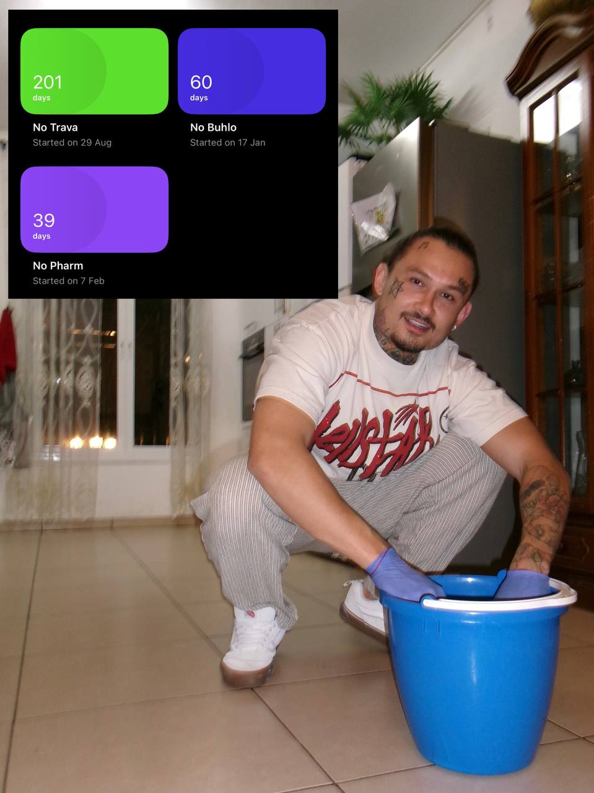

Alisher Morgenshtern
2 месяца в рехабе, 60 дней без алкоголя, 200+ без курева 😎
Ловите очередную порцию мыслей из чистого разума
- Настроение работает по принципу качелей, чем сильнее качнешь в одну сторону - тем сильнее получишь обратку. Даже если дофамин качественный (например хорошая еда или достижение цели) - все равно потом будет грустно, как ни крути. Стресс - не обязательно последствие негативных эмоций. Излишняя радость, восторг и ликование - тоже стресс для организма. Нужно стремиться к тихому, спокойному счастью.
- Мозг - самый вредный рассказчик, любящий подкинуть самые противные мысли. Именно подкинуть. Мое дело - вовремя заметить это и пропустить мысль мимо себя. Не начинать диалог с внутренним голосом. Это заведомо проигрышно. Я - не мои мысли. Я тот, кто наблюдает их и решает - думать эти мысли, или нет.
- Overthinking (не знаю, как перевести, пусть будет СлишкомМногоДумание) рождает еще больше мыслей. Замкнутый круг и ловушка разума, которая разрастается, как снежный ком.
- Лучше ставить себе маленькие, но легко выполнимые задачи и получать кайф от их выполнения, чем стремиться к глобальным, далеким целям.
- Высшая Сила работает через других людей, даже то, что вы читаете здесь и сейчас - не случайность. Ваша Высшая Сила пытается вам что-то сказать через меня. Важно слушать само сообщение, а не того, кто посылает сообщение. Listen to message, not messager. Часто предвзятое отношение к личности говорящего мешает уловить полезную суть.
- Важно развивать "добрый глаз": Когда взгляд добр, вы видите мир добрым. Верно и обратное. Все что мы видим снаружи - отражение нас внутри. Если мир кажется злым и обманчивым, значит вы сами таковы. Муха в комнате, полной цветов, будет искать дерьмо. Пчела в комнате, полной дерьма, будет искать цветы. Я пчела ты пчеловод.
- Слова имеют очень важное значение. Сам факт, что слова произнесены, имеет серьезные последствия и наклыдвает энергетический отпечаток на все мироздание. Злословие убивает сразу троих: рассказчика, слушателя и того, о ком они говорят.
- Наша речь определяет мир вокруг нас.
- Мысли зависят от состояния, поэтому работать нужно над состоянием, а не над мыслями.
- На любую ситуацию нужно смотреть как на часть широкой картины. На каждого человека, как на ваше зеркало и потенциального учителя. Если кто-то вам отвратителен и бесит, подумайте о том, зачем Высшая Сила послала вам этого человека и постарайтесь увидеть уроки. Аналогично с ситуациями.
- Старайтесь жить вашу жизнь в радости, потому что человеческая радость и оптимизм притягивает соответственную радость Свыше. То, что происходит на земле задает тон небесной реакции на наши обстоятельства. Кайфуешь не смотря ни на что - получаешь больше кайфа. Страдаешь - получаешь больше страданий.
- Боль это неотъемлимая часть жизни. А вот страдание - это уже наш выбор.
- Совсем немного света рассеивает густую тьму. Маленькая свечка может осветить всю темную комнату. Если бороться темными силами против тьмы (злом против зла), ты сам останешься во тьме. Для борьбы с тьмой нужно светиться.
- Бог не предъявляет невыполнимых требований к Своим творениям. Каждое наше испытание - признак уверенности Всевышнего в наших силах. Если вам послали испытание, значит там наверху уверены, что вы справитесь с ним достойно.
- Чем праведнее человек, тем сильнее его низменное начало. Чем больше духовно растешь, тем больше соблазнов будут ждать тебя на пути. Чем сложнее и достойнее цель, тем больше предстоит усилий и жертв, которые сами по себе являются критерием, насколько цель важна. Высшее "Я" проявляется только через преодоление испытаний.
- В каждом отступлении скрывается трамплин к более полному раскрытию, каждое падение - начало восхождения, разъединение - призыв к воссоединению, трагедия - прелюдия к искуплению. Стоя на месте я не смогу перепрыгнуть высокую преграду перед собой, нужно сделать несколько шагов назад, чтобы взять разбег.
Сейчас очень хочется взять разбег и уебать через забор рехаба. Остался еще месяц. Держимся, стоим крепко и выздоравливаем. Всех обнял, спасибо за поддержку, свобода не за горами 🥲